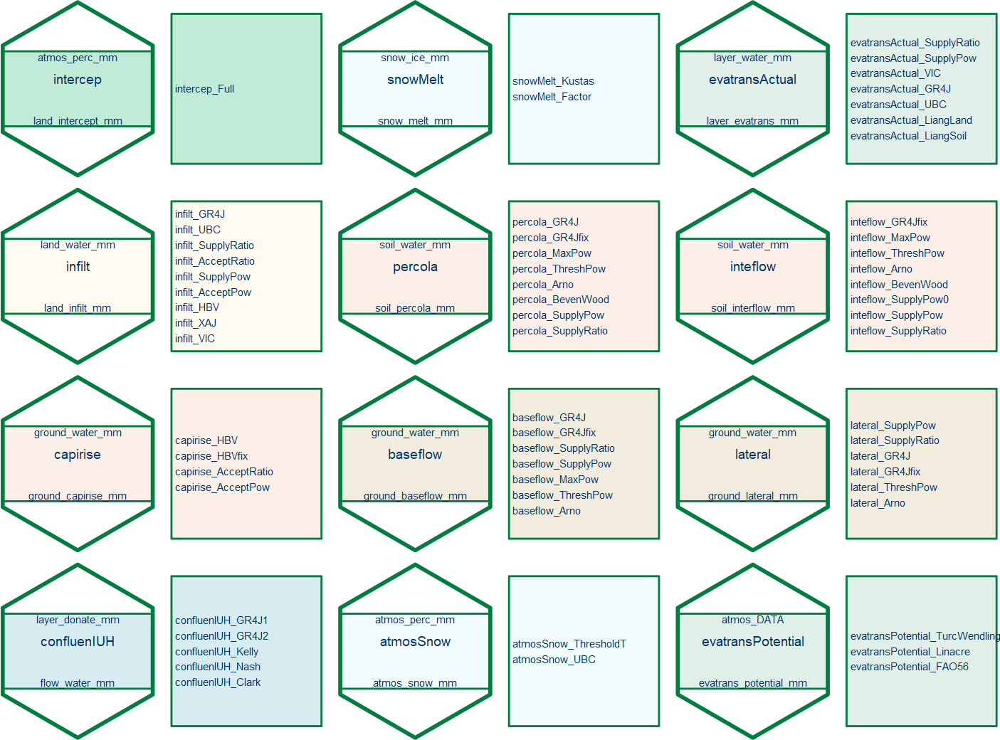

The EDCHM package is a flexible hydrological modeling framework that incorporates a collection of well-known models, such as GR4J , HBV , VIC , and UBC . Each model is divided into clear, well-defined processes as individual, self-contained modules. EDCHM allows users to not only easily select and combine different processes to create new model structures, but also to choose from a range of methods for each specific process. This provides a high degree of flexibility and customization. EDCHM also allows users to divide the research catchment into sub-basins, grids, or hydrological response units (HRUs), providing a high degree of spatial resolution and flexibility. This enables users to capture and simulate the water cycle at different scales, from the regional level down to the level of individual land units or catchment areas.
Overview of this document
Due to the limitations of the Rd document format, the topics in the EDCHM package documentation are ordered alphabetically. To help users navigate the documentation, an auxiliary table is provided that outlines the design of the EDCHM package.
You will find some basic concepts and overview of hole EDCHM in:
-
EDCHM-package: basic concepts and describe of this document -
all_vari: description of all the variables -
all_param: description of all the parameters with ranges
You can see all of the 12 process with their associated 62 methods (modules) in:
-
snowMelt: melt the snow into liquid water -
intercep: intercept the water before is arrive the land surface -
evatransActual: calculate the actual evapotranspiration from interception of water in th soil -
infilt: water from land surface enters the soil -
percola: soil water through the pores of aquifer movement to ground water -
inteflow: runoff in the soil layer, which fromsoilLydirectly into the streams or rivers -
capirise: ground water upward to the unsaturated soil layer -
baseflow: the portion of groundwater, that directly into the streams or rivers -
lateral: water exchange with other basin in the groundwater layer -
confluenIUH: runoff (runoff, interflow, baseflow) from the hydrological unit to the rivers -
atmosSnow: devide the precipitation into rainfall and snowfall -
evatransPotential: calculates the potential evapotranspiration
You get the information how to use EDCHM and calibrate in: - build_modell: model building - cali: calibrate algorithms
Layer and Process
Before using the EDCHM framework, it is necessary to have a basic understanding of its concepts.

In the EDCHM framework, a Layer is defined as a vertical space with common characteristics. EDCHM defines five basic layers:
atmosLy: only stores meteorological data but doesn’t interact with other hydrological processes (in current version).snowLy: is the layer of snow.landLy: consists of two sublayers. Sublayerintcptis a storage for intercepted water, which can be evaporated. Sublayerlandserves only as a temperature layer for “pounded water” and doesn’t have any storage capacity.soilLy: is defined as an unsaturated zone between land surface and water table of groundwater.groundLy: is defined as a saturated zone of groundwater.
In the EDCHM framework, a Process related to the movement or distribution of water on Earth. Some of them occur in a single layer, some of them occur between two layers. Here has defined 9 hydrological processes:
-
snowMelt: melt the snow into liquid water. -
intercep: intercept the water before is arrive the land surface. -
evatransActual: calculate the actual evapotranspiration from interception of water in th soil. -
infilt: water from land surface enters the soil. -
percola: soil water through the pores of aquifer movement to ground water. -
inteflow: runoff in the soil layer, which fromsoilLydirectly into the streams or rivers. -
capirise: ground water upward to the unsaturated soil layer. -
baseflow: the portion of groundwater, that directly into the streams or rivers. -
lateral: water exchange with other basin in the groundwater layer. -
confluenIUH: runoff (runoff, interflow, baseflow) from the hydrological unit to the rivers, in this process the water volume will not be changed but the distribution the time axis will be recalculeted with IUH (Instantaneous Unit Hydrograph) method.
In addition, there are two meteological process:
-
atmosSnow: devide the precipitation into rainfall and snowfall. -
evatransPotential: calculates the potential evapotranspiration.
are both considered meteorological processes because they can be directly obtained from meteorological datasets or calculated using only meteorological data. The results of these processes serve always as input data for hydrological processes. evatransPotential is a crucial step in determining the actual evapotranspiration by most hydrological models.
Variable and Parameter define
With a clear understanding of layers and processes, we can now move on to the basic definitions in the context of modeling.
All variable names in the EDCHM framework are composed of three parts: a group-name, a physical-name and a variable-units These parts are separated by an underscore _.
group-name: name of theLayerin which the variable is located. Sometimes it can also be the Process name ortime, one important dimension. Thegroup-nameis limited to a maximum of 8 characters and must be in lowercase letters.physical-name: the physical variable name, and it uses camelCase to combine multiple words. And the water volume will always simplified aswater.variable-units: the physical units of the variable
To simplify the program, all time-dependent variables use TS as the time unit, which is defined by the model, it can be 1 hour, 4, 12, 24 hours and so on, but the time unit is not included in the variable name. Additionally, all variables are assumed to be homogeneous in the area, so the area unit square meter (m2) is also not included in the variable name.
group_variableName_unit some like land_water_mm, atmos_temperature_Cel
The following tables list the model variables and their corresponding formula symbols used in the EDCHM:
- some state variables and Capicity of the layer storage:
| Variable | Symbol | Unit | Description |
|---|---|---|---|
water_mm |
mm/m2 | water volume in one Layer
|
|
land_water_mm |
mm/m2 | .. in landLy
|
|
land_interceptWater_mm |
mm/m2 | .. in landLy (intercepted) |
|
snow_ice_mm |
mm/m2 | .. in snowLy (equal water) |
|
soil_water_mm |
mm/m2 | .. in soilLy
|
|
ground_water_mm |
mm/m2 | .. in groundLy
|
|
capacity_mm |
mm/m2 | maximal capacity of storage in one Layer
|
|
land_interceptCapacity_mm |
mm/m2 | .. in landLy (intercepted) |
|
soil_capacity_mm |
mm/m2 | .. in soilLy
|
|
ground_capacity_mm |
mm/m2 | . in groundLy
|
- some flux variables and potential flux:
| Variable | Symbol | Unit | Description |
|---|---|---|---|
flux_mm |
mm/m2/TS | flux or flow in unit area | |
atmos_precipitation_mm |
mm/m2/TS | .. of precipitation | |
atmos_rain_mm |
mm/m2/TS | .. of rain fall | |
atmos_snow_mm |
mm/m2/TS | .. of snow fall | |
atmos_evatrans_mm |
mm/m2/TS | .. of evapotranspiration | |
land_intercept_mm |
mm/m2/TS | .. of interception | |
land_infilt_mm |
mm/m2/TS | .. of infiltration | |
land_runof_mm |
mm/m2/TS | .. of runoff | |
snow_melt_mm |
mm/m2/TS | .. of snow melt | |
soil_percola_mm |
mm/m2/TS | .. of percolation | |
soil_interflow_mm |
mm/m2/TS | .. of interflow | |
ground_baseflow_mm |
mm/m2/TS | .. of baseflow | |
ground_capillarise_mm |
mm/m2/TS | .. of capillary rise | |
ground_lateral_mm |
mm/m2/TS | .. of lateral flow | |
potentialFlux_mm |
mm/m2/TS | potential (maximal) flux or flow | |
atmos_evatrans_mm |
mm/m2/TS | .. of evapotranspiration | |
land_potentialInfilt_mm |
mm/m2/TS | .. of infiltration | |
soil_potentialPercola_mm |
mm/m2/TS | .. of percolation | |
soil_potentialInterflow_mm |
mm/m2/TS | .. of subsurface flow | |
ground_potentialBaseflow_mm |
mm/m2/TS | .. of baseflow | |
soil_potentialCapirise_mm |
mm/m2/TS | .. of capillary rise | |
ground_potentialLateral_mm |
mm/m2/TS | .. of lateral flow |
- the stream flow will not in m3/TS or m3/s but also in flux dimension:
| Variable | Symbol | Unit | Description |
|---|---|---|---|
streamflow_mm |
mm/m2/TS | streamflow in flux dimension | |
flow_runoff_mm |
mm/m2/TS | .. from runoff | |
flow_interflow_mm |
mm/m2/TS | .. from interflow | |
flow_baseflow_mm |
mm/m2/TS | .. from baseflow |
Additional there are also some symbols from the program-view:
-
: the collection of all data of one group or layer
-
: data in
atmosLy -
: data in
landLy -
: data in
snowLy -
: data in
soilLy -
: data in
groundLy -
: data in any (but the one)
landLy,snowLy,soilLyorgroundLy
-
: function or modulr e.g.
or
Parameter define
The parameters will be defined in every function topic The naming convention for parameters consists of four parts: a prefix param, the process name Parameters make up with prefix , Process name (sometimes same as Layer name), an abbreviation of the method in three small letters, and the original parameter name. This allows for clear and consistent naming of parameters within the program.
param_process_mtd_k some like param_atmos_ubc_A0FORM, param_infilt_hbv_beta
In every function topic, the range of parameters will be provided in the format of <low, upper>. all_param list also all the parameters from EDCHM.
Module define
In the last section, ten hydrological and two meteorological processes are defined in the conceptual view. Now they will be defined in programming view:
For every process there is only one output variable and several input data (data and parameters):
| Process | Main Input | Output |
|---|---|---|
intercep |
atmos_perc_mm | land_intercept_mm |
snowMelt |
snow_ice_mm | snow_melt_mm |
evatransActual |
layer_water_mm | layer_evatrans_mm |
infilt |
land_water_mm | land_infilt_mm |
percola |
soil_water_mm | soil_percola_mm |
inteflow |
soil_water_mm | soil_interflow_mm |
capirise |
ground_water_mm | ground_capirise_mm |
baseflow |
ground_water_mm | ground_baseflow_mm |
lateral |
ground_water_mm | ground_lateral_mm |
confluenIUH |
layer_flux_mm | flow_water_mm |
atmosSnow |
atmos_perc_mm | atmos_snow_mm |
evatransPotential |
atmos_DATA | evatrans_potential_mm |
And then a module is defined as: a specific process with different method from well-know models. The name of module is composed of three parts: the process name and method name:
process_Method some like evatransActual_VIC and evatransActual_LiangLand
The following figure shows all 12 processes and 62 modules that have been defined to date.
